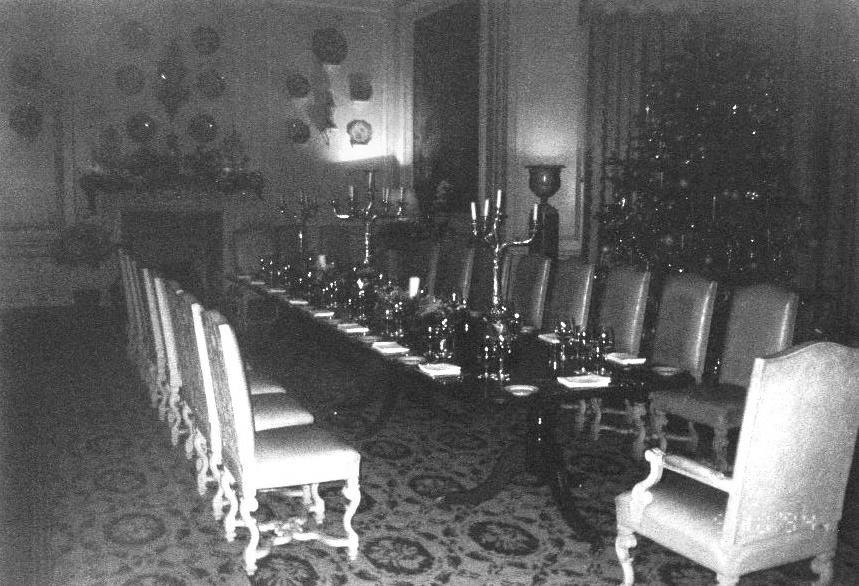

News & Events
Palmer, Alcock, Sharp & Tindall Trust (P.A.S.T.) click here to go straight to site
Please send all messages of support to saveashfordchurch@yahoo.co.uk and we will inform you of developments. When you email us, please indicate if you would like to remain anonymous. We PROMISE not to pass any email addresses on. Thank you very much for your kind support.--o0o--
Verbatim transcript of full recording (recording duration 8 minutes 23 seconds) of conversation between Archdeacon Philip Down and Priest in Charge of Ashford Colin Preece (outside the Churchyard railings) and Christopher J. Cooper and Mick Donkin (inside Churchyard Railings in six-man tent) on Sunday 3rd October 2010 at 4:40pm approx on the S.W. Corner of Ashford Church Yard. The sound recording may be obtained of Christopher J. Cooper upon request.
Full transcription made 15/1/11 from recording held by Christopher J Cooper.
KEY:
Archdeacon Philip Down = AP
Colin Preece = CGP
Mick Donkin = MD
Chris Cooper = CJC
Noteworthy quotes in bold and/or underlined bold. Alleged lies in underlined italics.
…………………………………………………………………………………………….
AP: I think now at this stage, at this latest pass, it is quite an arrogance, erm….
CJC: Well, yeah but of course any protest is, because it is one man, or a few men or whatever and we have got a few supporters who are prepared to come here, but obviously the people who signed the petition all support us, but they can’t give up their day to day job. I can, I..I..I..will you know; if necessary I will give up my house, if the works start in the church I’m going on hunger strike. You know, I’m not playing games here, I’m deadly serious
AP: You are playing games
CJC: No I’m not
AP: It’s a very elaborate….
CJC: No it’s not
AP: ….and serious game that’s being played
CJC: How is it elaborate and serious? Philip, Philip – I’m a ‘WYSIWYG’: What you see is what you get, and I don’t think you can deny that Colin. I’ve never played any games with you. I’m straight down the line; what you see is what you get. I told you from day one I was opposed to this and I haven’t relented from that. And now I have all this public support.
AP: 154 signatures on a….
CJC: 150 signatures in three days from just standing here, not going in the High Street.
CGP: Not three days; you’ve actually been here a whole week.
CJC: I’ve been here a whole week, but we’ve only been doing the petition for three days, because I didn’t come here to do a petition, I came here to make a one-man protest.
AP: And what about the hundreds of people who would like to see this project succeed?
CJC: The Council, the Church of England, er yeah they’re not the people of the town. You see, when John Everett was here he was Vicar and as Freehold Vicar……
AP: You’re speaking for the people of the town of Ashford?
CJC: Yes
AP: Let me get this right
CJC: I am; yes I am. <To Mick Donkin> Do you think that’s fair to say I’m speaking for the people of the town of Ashford?
AP: You’re not elected in any way; you’re not appointed……
CJC: Nor is “Ashford’s Future”, but they’re the ones who obtained the money. That’s an unelected quango!
CGP: We’ve o…. We’ve obtained the money via “Ashford’s Fu….”
CJC: Via “Ashford’s Future” who are an unelected quango
<A few seconds of silence>
AP: It all seems pretty distorted to me
CJC: Well of course, because you and I are at complete poles apart. It’s a bit like Rowan Williams and …er …. David Hope! I mean, you know, we’re poles apart. We’ve sat down and talked before about certain issues, where, where you find my whole stance highly offensive and terrible, whereas 50 years ago that was the ‘line’ in the Church of England that we followed. Now things have changed so much, at the end of the day it’s like what we say in the Prayer Book Society: we’ve just stayed just where we are, cos God is an unchanging God and the truths are unchanging, but the rest of the Church of England has repitched the tent er, to put an analogy in.
AP: Well, I’ve come to as you, and I have said ‘please’……
CJC: Aha
AP: …to vacate the site…
CJC: Aha
AP: …..before tomorrow morning
CJC: Aha
AP: And, you know, that’s what I want to do. I can’t persuade you and erm convince you of a different point of view erm….
CJC: The problem is of course that we need to be ‘in communion’ one with the other. The Bishop of Maidstone <former Bp of Maidstone Graham Cray> did a pretty good job of fracturing my Communion with the Diocese of Canterbury.
AP: But that’s a conversation that shouldn’t be had in a tent erm or on this venue like this.
CJC: Yeah, but the problem with the Church of England today is that it just puts its head in the sand and ignores things so that they get this bad. This should never have happened. We should have been discussing this properly and the whole town should really have properly been consulted
AP: The whole town has been consulted… <inaudible few words>
CJC: Well why are they signing my petition?
AP: Because they’ve been misinformed and misled by you.
CJC: They’ve been misinformed? So that’s not true then?
<CJC Shows CGP and AP the heading of one of the Petitions – all the petition headings read as follows: “We the undersigned call for a public enquiry into the use of £1.2 million of Growth Area Funding from Central Government to redevelop Ashford Parish Church into a 40% Arts use compared to 60% Church use at a time when frontline services and the Army are threatened with cuts, as well as the planned closure of the Law Courts and Tourist Information Centre in Ashford”>
MD: That’s what they’re signing
CJC: That’s what they’re signing
MD: Erm, just make….
CJC: Oh and…..
CGP: <reading the note on the tent> No graves are being dug up by the way.
CJC: No graves are going to be dug up? So how are they…how are they going to get through there then? Because I’ve got the plans.
MD: People who’ve come here, people who walked past today <inaudible word> that is what they’re signing, we’re not misleading them in any way they’re…..
CJC: We’ve explained it very carefully
CGP: <angrily to MD> I don’t even know who you are!
MD: Me?
CGP: Who are you?!
MD: I’m… I was coming past and he gave me shelter.
CJC: Because that’s what we do in the church isn’t it?
CGP: So you’re here because he’s giving you shelter, not because you want to support this
MD: No, I do believe in this cause.
CJC: He happens to believe in it, and of course I make no bones about it….
MD: I just come back into the country, come back into England on Wednesday.
CGP: Well there you are, so you don’t really know the history of this! Now with all due respect, if you’re listening to what Chris is saying, then you’re getting a very very distorted view of what has taken place
CJC: Gentle…Gentlemen, if it isn’t true…..
AP: <referring to the wording of the Petition> None of that’s true!
CJC: Really?
AP: The money that’s set aside is for the project.
CJC: Well if it isn’t true then it’s very simple isn’t it, you’d be suing me. So go and sue me then! If it’s nto true then it’s defamation isn’t it? You can stand here and tell me it’s not true, but I wouldn’t be standing here a week later….
AP: That’s misinformation
CJC: It’s not misinformation
AP: The money from the project won’t be used anywhere else in the town with respect to cuts that are being proposed.
CJC: Well – so what will happen to it?
AP: There is no process of……
CJC: There is no process? So that’s it, it’s dead money?
AP: The money is set aside for this project and that’s what’s going to happen. It’s all been planned and put aside and all the rest of it through due process.
CJC: It’s £1.2 million of taxpayer’s money
CGP: It’s been approved Chris.
AP: <To CJC> What’s that got to do with anything?! The money was…. Money comes from somewhere.
CJC: Why have we not done that? Why have we let the building fall down around our ears for the last seven years? We haven’t done anything!
CGP: Excuse me, with all due respect the church spends a great deal amount of money every year on that in looking after the fabric
CJC: What have we done to the exterior fabric in the time you’ve been here?
CGP: We have done all sorts of things.
CJC: What – to the exterior?
CGP: Yes!
CJC: Well what?
CGP: We do pointing and work like that, but I don’t have to justify this to you Chris because you weren’t here 7 years ago.
CJC: Yes I was!
CGP: No, I’m sorry, you’ve come on from no-where
CJC: No, I was here before; I was actually here….we’re not going to go “I was here before you” but I was actually on the PCC in the inter-regnum before you arrived.
CGP: I know you were Chris.
CJC: Right so I was here before
CGP: Right
AP: What makes you think we’re going to dig up graves?
CJC: The plans which show the boreholes, because bear in mind…. now I don’t know whether Nick Lee Evans were supposed to send me all these plans but they did. They sent me all the the tree plans and they sent me the borehole plans and they’re going to be trench dug <meaning the out and return flow pipes for the GSHP of course, as boreholes are bored>
AP: But you won’t be preventing builders from digging up graves.
CJC: Well, we will if we stay here
AP: If any graves are being interfered with in any way whatsoever….
CJC: No, you just told… you just said that they weren’t
AP: It is the Commissary Court that has that responsibility, not you.
CJC: Yeah, you just told me that they weren’t being dug up
AP: You, you’re telling me that they are
CJC: Right, and you’re telling me that they’re not. Is that correct?
AP: I’m saying to you that this tent is not preventing any such thing
CJC: Well it is while it’s here, because this is your site access
<a short silence>
AP: I…I don’t quite get the connection
CJC: Well you can’t if…if you haven’t got a site-access.
AP: If you have people signing a thing on the basis of this….
CJC: Well no, they’re not, because what they’re signing is what’s there <on the petition> but if that’s incorrect, you tell me how that’s incorrect. What I put that <the sign on the tent> up for is to say to people who think it’s disrespectful to put a tent on here; if you think that’s disrespectful then bear in mind what the public are going to think when they come in the churchyard and see graves all being dug up
AP: Well I think it’s disrespectful that you are ignoring the entire process
CJC: Well, yeah you might do, but I think it’s disrespectful that the process ignores the very valid points which I have raised and which I am going to a Solicitor about because I’ve been advised to. Issues around the signing of the contract when I still had leave to appeal outstanding, issues about cutting the tree down before leave to appeal was denied to me by letter on the Thursday...that tree was cut down and that tree is in the Faculty
CGP: That tree was cut down to prevent it falling onto that house
CJC: Well I haven’t seen that anywhere
CGP: I know; well I’m sorry about that Chris because we don’t have to report everything through you…..<inaudible second or two of the two parties talking over each other>….it was in real danger of falling onto that house
CJC: Why have the Council said in the paper very clearly that it wasn’t dangerous?
CGP: So you’d have been happy for it to fall and perhaps kill some poor passer-by?
CJC: Well in that case, why wasn’t it cordoned off for Health & Safety
CGP: Because it was cut down
CJC: No, but it doesn’t just get dangerous all of a sudden!
CGP: It was cordoned off whilst it was cut down, Chris
CJC: It doesn’t get dangerous all of a sudden, does it?
CGP: No but it….
CJC: <interjecting> It was cordoned off while it was cut down, but you’ve been saying it had been dangerous for weeks
AP: Just… just confirm to me that you’ve heard my request.
CJC: I’ve heard your request. So you’ll now be applying for an injunction to move us?
CGP: We don’t have to do that Chris
AP: I don’t know that that’s necessary
CJC: OK
AP: But er… I think you might do the right thing in the mean-time and that’s what I’ve asked you to do…so er in the mean-time look after yourself.
CJC And you. Cheers.
- END -
R.I.P. Our beloved Ashford Sacristan Mr F.C. Palmer; 1920 - 2009
Obituary:
Frederick
Charles Palmer was born on January 20th 1920 at 229 Godinton Road,
Ashford (demolished a few years ago for the expansion of the railway
line). He was baptised at Ashford Parish Church by one of the
Curates during the time of Rev. T.K. Sopwith. His father and
grandfather before him had been well-involved with the church as
Choristers and so unsurprisingly Fred became devoutly associated with
the Church - an association which was to continue for all his 89
years.
The young Fred began his first day at the National
School (now St Mary's C of E Primary) aged 4, and Edie Knott (who is
now over 100 and still going strong!) still remembers that first day
- Fred arrived in Harris Tweed coat and cap; very smartly dressed!
At the age of 11 he won a scholarship - in Physics & Maths - to
Ashford Grammar School, and this stood him in good stead for his
other love (apart from Ashford Church) - the railway, the mainline of
which had been laid right past the back garden of his house in 1884
by the London & Chatham Railway Co.
Both Fred's parents
died when he was quite young; his Father (who was employed at the
building which is now the Downtown Diner, Park St, but was in those
days Headley's Grocery Depot) when he was 11 and his mother when 16
which meant that he had to go straight into employment at 16 and so
he joined the Railway firstly as a ticket clerk. He always
remembered his father's funeral in especially sombre vain; he was not
allowed to attend the service in the Church, (something he always
deeply regretted) and could only stand at the side of the Canterbury
Road watching as the cortege went past.
Initially, Fred's job
was not, as one might imagine at Ashford Station which would have
been so very convenient; no, he had to cycle the 22 miles to
Cranbrook Station and back every day! No doubt this exercise
helped him attain the good old age of 89, remaining busy and very
active for all but the last few months of his life.
Fred was
soon keen to contribute as much as he could to the great
Anglo-Catholic Mission of the Parish Church, which was in those days
one of the most prominent of the greater Parish Churches in Kent,
always being assigned Vicars of considerable distinction, many of
whom went on to become Cof E dignitaries. There were several
hundred communicants each Sunday, and the Annual Armistice Service
filled all the 1,700 seats with some piling out of the doors!
Weekly Sunday services comprised of said Communion at 7, 8, &
sung at 10; 11:30 Choral Matins, 3pm Litany or Children's Service and
6:30pm Sung or Choral Evensong. Unusually it was the two early
services which drew the greatest number of Communicants - often 60 or
so at the 7am and nearly 200 at the 8am with perhaps 100 or so at the
10am Sung service. It was against this glorious high-church
background that Fred was honoured to be trained as a Server in the
quaint Mission Church of St Paul, Forge Lane (now the Ashford Scout
Hut) by one of the Curates, Dennis Patrick Lewery, in 1937.
At
first, Fred found lodgings in a house in Willesborough, but was soon
fortunate enough to find accommodation in Kent Avenue, back in the
town centre, and from then on he threw himself into the life of the
Parish Church more and more. He was Server at the 7am Communion
service in the Parish Church each Monday and Wednesday, prior to
commencing his daily round of work. By this time Fred was
working on the Ashford line, making this possible. Until 1942
the Railway was a reserved occupation, although he had to be prepared
to move around, for instance spending his 21st birthday looking for
'digs' in Catford! Then a year later Fred was 'called up' to
serve and joined the RAF. On one occasion, his squadron were
posted to India, but as so often happened in those days the orders
were reversed, so that having marched down to the docks, they then
had to march back again to HQ, and on the way, civilians took up the
notion that they must have returned from some far-flung place and
they were cheered along the way - this much appealed to Fred's sense
of humour, these civilians little knowing that they had only
marched to the docks and back! While in the RAF, Fred learnt to
drive, and, like most men, particularly relished manouvreing large
trucks around! He was soon promoted to Sergeant and generally
enjoyed his time on active service.
After the war, Fred returned to his beloved
Ashford and joined the Stores Department on the Railway. He
threw himself into Community life, becoming Scout Master, a regular
on the list of Servers at the Parish Church, joining the Church Choir
and - at the suggestion of Canon Bowen Fred's favourite Vicar whom he
always described as "A very holy man", though this
description could just as well be applied to Fred himself.- joining,
and then in 1947 becoming Secretary of the Guild of Servants of the
Sanctuary (East Kent Chapter) which had (and still has) a branch at
Ashford Parish Church.
For about five years in the
1950's, Fred learnt to ring at Ashford. Fred knew Hildred
Wickens (one of the ringers) very well and by extension, also the
late Tom Cullingworth. Tom of course married Hildred's daughter
Lily; Tom and Lily then moving to Maidstone, but while Tom was
courting Lily he was a member of the Ashford band. Had Fred not
so many other pressing commitments in the Church and town and with
the Guild of Servants of the Sanctuary, he would probably have
continued with his ringing. Our veteran Ashford ringer, Miss
Jones remembers Fred learning, and she believes he was also elected a
member of the KCACR at a ringing meeting at New Romney.
Certainly, he told me that he clearly remembered having rung at New
Romney. Ashford had a good band in the 1950's under the
captaincy of Charles Walter Everett, and was not augmented to 10
until 1970.
Fred always took a keen interest in what
went on in the belfry, and would often ask me how things were going,
but made clear that it was 8-bell ringing that he liked. When
we had rung a Quarter Peal on the 8 (usually a well-struck
performance of Grandsire or Stedman) and I would come down to the
Vestry to robe for Evensong, I would ask him if he enjoyed the
ringing, and he would say in his usual style "it was VERY nice"
- but if it had been on the 10, (usually well-struck Grandsire
Caters) and you asked the same question he would say "well, it
sounded alright, but ten bells is too many; eight is just right".
Thus, when arranging his funeral ringing, we were sure to ring only
the old 8 - Grandsire on the Sunday (which was sadly unsuccessful
because of too much 'clipping' - some nice shorter touches being rung
instead) and a very nice successful Quarter Peal of Stedman Triples
immediately following the funeral. The bells being half-muffled
and the leather quite thick, striking them was not easy in either
attempt, but we felt sure that Fred would have said that the ringing
was "very nice" - especially the post-funeral attempt.
Just because Fred's time as a ringer was such a short span, he still
remained very interested in matters relating to the belfry. It
was he and I who as PCC members, managed to obtain a fabric grant to
pay for the current excellent set of bellropes in 2004. When in
January 2005, we rang a Quarter Peal of Grandsire Triples for his
85th birthday, despite the fact that his legs were in very poor
shape, he still made the huge effort to climb the belfry steps and
give hearty thanks to the band there assembled for our efforts to
ring him a birthday Quarter Peal, and it was only my enforced absence
from the tower that meant we could not ring at Ashford for his 86th,
87th 88th &89th birthdays, attempting them at New Romney instead,
which pleased him greatly, despite the fact that he was not able to
actually hear them for himself.
In the 1950's Fred met
Kath, and they were married on 19th July 1958, purchasing a house in
the suburbs at Kennington, where they both remained until January
2009. My most proud moment with Fred was when we managed
between us to 'see-off' an attempt to remove the metal riddle-posts
of the two Ashford side altars where the 8am BCP Communion is
celebrated (which would have probably resulted in the altars being
moved forward and the Eastward position - which Fred and I agreed was
the correct way to celebrate - being entirely disposed with). I
managed to find the original faculty document for their installation
in 1927, so I made a point of this at the subsequent PCC meeting and
then Fred gave a very lucid explanation as to the importance of the
Eastward position. The posts and curtains remained - though I'm
sure I was marked out as a reactionary troublemaker from that time
on!
It is impossible
to overstate Fred's enormous contribution to the life of his beloved
Parish Church. He 'saw out' seven Vicars, was a Server for over
70 years, Choirman since 1945, Treasurer of the Choir and of the
Church for decades and as mentioned was also a bellringer too for a
few years in the 1950's. In the 1980's, he was honoured to be
Crucifer at the marriage service of the Mountbatten children when the
Royal Family were in attendance and fully realised the enormity of
such honour.
Over the past few years, Fred's mobility
had decreased somewhat, and so that he could remain active as Server
in his beloved Parish Church, it was decided that he should be given
a knee replacement. The operation went very well, but the
inactivity and lack of independence which followed did not suit Fred
at all; he having always been very busy and active. He suffered
a heart attack a while later and was rushed to hospital, but survived
and went back into respite. Unfortunately he then suffered a
fall, and things looked very uncertain, but amazingly, again, Fred
bounced back. Sadly, back in respite, following a further fall
and other complications, he passed away in the early hours of
Wednesday 20th May 2009 in his 90th year.
Immediately following the funeral as the coffin was carried out of the church, the half-muffled back 8 rang out in rounds, followed by a solemn Quarter Peal of Stedman Triples; just as Fred would have wanted.
|
Ashford, Kent
At the Ex-Collegiate Parish Church of St Mary the Virgin
Monday, 1 June 2009 in 47 minutes (21 cwt)
1263 Stedman Triples
|
|
| 1 | Roy A. Barclay |
| 2 | Donald H. Niblett |
| 3 | Stella Shell |
| 4 | Simon J.O.Head |
| 5 | Roderic K. Bickerton |
| 6 | James W. Belshaw (C) |
| 7 | Christopher J. Cooper |
| 8 | Phill Stott |
Fred only liked 8 bell ringing (he learnt to ring for 5 yrs approx in the 1950's at Ashford) and Stedman Triples was his favourite.
At the reception, his family were presented with a card signed by all the band commemorating this performance


The bell & clock in the Maiden's Tower at Leeds Castle - the bell was cast c.1450, and legend has it that it was rung every night for curfew from its installation until the early 20th century. The bell is hung for full-circle ringing, and has been given a new frame, wheel and headstock in recent times (although the wheel is upside down and it is not roped). The clock is very ancient, and never had a dial.
++++++++++++++++++++++++++++++++++++++++++++++++++++++++++++++
READ MESSAGES OF SUPPORT FOR THE ASELY BY CLICKING THIS LINK
Join the A.S.E.L.Y. mailing list by clicking HERE.
NOTICE OF NEXT BUSINESS MEETING:
Business Meetings SUSPENDED; Emergency Meetings held as necessary,
Death of John D. Money Esq.
We are sad to report that Mr Money, formerly Estates Manager at Leeds Castle in the days of Lady Baillie, and who had lived at Battel Hall in Leeds village for over 50 years passed away in early July 2007. His like will never be seen again; both with regard to his splendid diction, and his service to the Community of Leeds in the old days. He was a staunch supporter of the Landed Gentry, and of the Book of Common Prayer, attending the 8am Communion service at Leeds until it was done away with several years ago. ASELY members rang the following Quarter peal on one of the rings of bells upon which the Leeds Youths rang a peal of 5184 Oxford TB Major on Whit Monday May 31st 1762 (tho' all the bells at New Romney have since been recast):|
Ancient Society of Esquire Leeds Youths [Est. 1751]
St Nicholas, New Romney, Kent
On Sunday 22nd July 2007 in 41 minutes Tenor:16¢
A Quarter peal of 1260 Triples on Stedman's Principle
|
|
| Treble | Christopher J. Cooper Esq. |
| 2 | John E. Hearn Esq. |
| 3 | Benjamin D. Kipling Esq. |
| 4 | Richard J. Chandler Esq. |
| 5 | Simon J.O. Head Esq. |
| 6 | Roderic K. Bickerton Esq. |
| 7 | Mark Chittenden-Pile Esq. (Call'd Bobs) |
| Tenor | William J. Stungo Esq. |
| "The Sun is sinking fast; the daylight dies: Let love awake and
pay her evening sacrifice". Rung at eventide to the honoured memory of John D.
Money Esq., Gent. of the Parish of Leeds, Kent who passed away recently. He
lived over 50 years at "Battel Hall" in that P'ish; was a Chartered Land Agent
and as such Estates Manager of Leeds Castle in the days of Sir Adrian and Lady
Olive Baillie. He was a staunch supporter of the landed Gentry, and the Forms of
Service contained in the Book of Common Prayer (1662). "Well done, thou good and
faithful servant". 'REQUIESCAT IN PACE'. The above ringing is quite probably the best and truest striking performed upon these bells since rehanging in 1975. |
|
Ten members of the ASELY attempted to ring a Quarter Peal of Stedman Quators at Leeds to Mr Money's memory on 16th August 2007, but sadly this was lost in the 8th course. The band stood as follows: Treble: B.D. Kipling Esq. 2: M.J. Jones Esq. 3: S.J.O. Head Esq. 4: R.J. Chandler Esq. 5: R.K. Bickerton Esq. 6: J.B. Saunders Esq. 7: M. Chittenden-Pile Esq. 8: J. Smith 9: C.J. Cooper Esq. Tenor: K.A. Osborne Esq.
N.B. ASELY members are reminded that practices at Leeds are held each Friday between 8 and 9:30pm, and are well attended and generally useful affairs.
254th Anniversary Dinner; Saturday 10th December 2005.
The 254th Anniversary Supper proved to be a thoroughly enjoyable occasion, as ever. The Supper held at the Park Gate Inn (situated without the gates of Leeds Castle Park) was the usual traditional Christmas menu which the members have come to expect. The loyal toast to HM Queen Elizabeth II was proposed by the Master and drunk heartily by her loyal subjects there assembled.The Master then proceeded with the toast to the memory of the first Past Master James Barham (1751 - 1818). The Master's speech this year focussed on the wondrous Christmas Season 'now in the time of this mortal life in which God's son Jesus Christ came to visit us in great humility', and then contrasted this with what we all now happens just a few months later in the acts leading up to Good Friday where Judas Iscariot betrays Christ. Finally he reminded all the members to 'keep watch; for ye know not at which hour the Lord cometh' so 'that in the last day when He shall come in His glorious majesty to judge both the quick and the dead, we may rise to the life immortal whoever liveth and reigneth with God and the Holy Ghost, ever one God, world without end.

The formalities ended, the remainder of the evening was spent relaxing and looking at the peal books, as well as discussions regarding the continuation of our plans for the restoration of Godly quietness to Leeds Parish in 2006.
--------------------------o0o----------------------
God Rest Ye Merry Gentlemen....... and its tidings of comfort and joy!
Christmas 2005 has been a mainly enjoyable season in Leeds - sadly a few traditions in the actual Church continue to be eroded or compromised - but their are thankfully a few stalwarts (most of whom are members of the Friends of Leeds & Broomfield Churches) who keep good traditions going - the Church choir with assistance from a few others in the area gave a splendid rendition of Christmas Carols in the library of Leeds Castle, which was thoroughly enjoyed by all.The group who were entertained by the choir later enjoyed a splendid dinner in the Castle Dining Hall:

-----------------------------o0o---------------------------
A very enjoyable and positive meeting was held at the residence of our Beadle (Leeds Church Verger Mr Russell) on Friday 15th July 2005, with all the Emergency Committee in attendance. A splendid meat tea of Roast Pork was enjoyed, following which, those present ascended the belfry of the Parish Church.